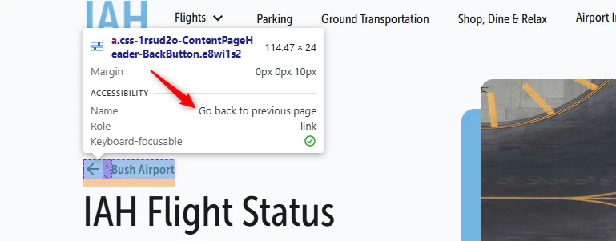
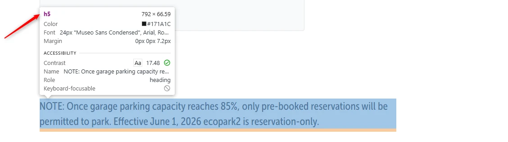
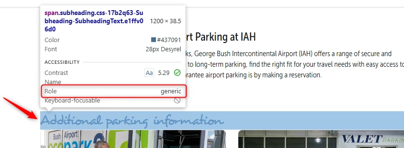

Accessibility evaluation of the website www.fly2houston.com, limited scope
Summary
We evaluated the accessibility of the website www.fly2houston.com on June 27, 2026, on behalf of Houston Airport System. This is a limited-scope evaluation: a focused scan of a small sample of pages rather than a full WCAG-EM audit. We reviewed three pages: the home page, the Flights page, and the Parking page. This report describes the accessibility issues we found on those pages and how each one can be resolved.
This website uses AccessiBe, an accessibility overlay widget. Further on in this report we explain in more detail what this tool does and does not do for the accessibility of your site.
Pages outside the three-page sample of this mini-audit
Content coming from third parties
PDF documents
Accessibility support baseline
Mozilla Firefox, version 148
Google Chrome, version 148
Apple Safari, version 18
NVDA screen reader in combination with Firefox
VoiceOver screen reader in combination with Safari
Other common browsers and assistive technologies
Technologies of the website
HTML
CSS
JavaScript
DOM
WAI-ARIA
SVG
About the AccessiBe overlay installed on this site
The site runs the AccessiBe accessibility widget: the floating icon that opens an accessibility menu. Many organisations install an overlay like this believing it makes their website compliant. It does not, and two findings in this report prove it on your own site.
An overlay is a single line of JavaScript that sits on top of your website. It can change some visual things for people who actively open it and click its options (larger fonts, higher contrast, a different cursor), but it does not change the underlying HTML. The underlying HTML is exactly what assistive technology reads: a screen reader parses your page's source before the overlay's JavaScript even finishes running. So an overlay structurally cannot fix keyboard navigation and focus order, missing accessible names, form errors that aren't linked to their fields, incorrect headings and structure, or status updates that aren't announced. Every one of those categories appears in this report.
The proof is in two of the findings in this report. Both were tested with AccessiBe's own "Keyboard Navigation" option switched on:
The custom focus indicator still fails the contrast requirement (see the Flights page). With the option on, the indicator becomes a blue (#639AF9) border on white (#F7F9FA): a contrast ratio of 2.6:1, still below the 3.0:1 minimum.
The keyboard focus on the chat button is still invisible (see "Keyboard focus is not visible" on the On all pages section). The option made no difference.
This matters beyond the audit. In April 2025 the U.S. Federal Trade Commission issued a Decision and Order against AccessiBe, fining the company $1 million and barring it from claiming its automated product makes a website WCAG-compliant without evidence. Installing an overlay also does not protect you from a complaint: in the first half of 2025 roughly a quarter of U.S. web accessibility lawsuits targeted sites that already had an accessibility widget installed.
On all pages of the website the button labeled "Language" opens additional content, but this functionality is not indicated in the code. Screen reader users are not aware whether the language selector is opened or closed.
User story
As a screen reader user, I want to know whether the language selector is expanded or collapsed, so that I can understand what happened after activating the button and whether additional options are currently available.
How to test
For every interactive component (link, button, input, custom widget), use DevTools' accessibility panel and a screen reader. Each must expose what it is (role), its name, its current state (expanded, selected, checked), and its value where relevant. Prefer native HTML over custom ARIA.
Solution
Expose the expanded/collapsed state programmatically. Add the aria-expanded attribute to the button element and update it when the language selector is opened or closed.
On all pages of this website there is a sticky chatbot button. The keyboard focus is not visible on the element, even when the "Keyboard Navigation" option is turned on in the AccessiBe tool.
Keyboard focus must be visible on all interactive elements (links, buttons, input fields). Keyboard-only users need this visual cue to know where they are on the page and to interact with elements correctly.
User story
I use the website with a keyboard. When I move through the page with the Tab key, I cannot see which element is active. I expect it to always be clear where I am on the page.
How to test
Tab through every focusable element on the page and check that you can always see where focus is. Look for outline: none in CSS without a replacement. Test focus in modals, cookie banners and carousels, as they often lose it.
Solution
Ensure that keyboard focus remains clearly visible. If the default browser focus indicator has been removed with CSS, restore it or provide a custom focus indicator that meets accessibility standards (sufficient contrast, clear visual indication).
When any page of the website is zoomed in, a menu button appears in the header, revealing the mobile menu. Currently, keyboard focus can escape the mobile menu and move to the underlying page while the menu remains open. When the menu is open, focus should be trapped within the menu to prevent accidental interaction with the underlying page.
User story
I use the website with a keyboard and/or a screen reader. When I navigate through the mobile menu, focus moves to the page behind the menu. I expect focus to stay inside the menu until I close it.
How to test
Tab through the page from top to bottom and note any jumps that don't match the visual order. Open every modal, dropdown and dynamic component and check that focus lands in a logical spot.
Solution
This can be achieved by either:
Keeping keyboard focus within the menu until the user explicitly closes it (via a close button or the ESC key).
Automatically closing the menu as soon as keyboard focus leaves it.
On all pages of the website there is an <iframe> element, the chatbot, that is missing the title attribute. Screen readers cannot announce the purpose of the iframe, leaving users unable to determine what content is embedded and whether it is worth navigating into. This significantly hinders navigation for assistive technology users.
User story
I read the website with a screen reader. When I encounter an embedded element, I hear no description and cannot tell what it contains. I expect my screen reader to announce a clear name so I can decide whether to explore it.
How to test
Using a screen reader, navigate to iframes on the page. Verify that each iframe has a meaningful title that describes the type of content and its purpose.
Solution
Add a descriptive title attribute to the <iframe> element that clearly indicates what content is embedded. For example: <iframe title="Customer support chat" src="..."></iframe>.
On all pages there is a sticky chat button. This button does not have an accessible name. Buttons should always have an accessible name that describes their function, and the name should update as the button's function changes. Accessible names should never be empty, because without one a blind visitor will not know what the button does.
User story
I use a screen reader, voice control, or other assistive tech to press buttons. I need every button to have a name that says what it does. Without a name, my screen reader only says "button".
How to test
Navigate the page's buttons with a screen reader and the Tab key. Verify that every button has a meaningful name that describes its function. For unclear cases, inspect the element in DevTools and confirm there is an aria-label, a visible label, or text content.
Solution
Make sure this button has an accessible name that describes what its function is.
The strong element means "important". When it is used for styling rather than meaning, random words come across as emphasised, and the spoken text takes on a meaning the author did not intend.
User story
I read the website with a screen reader. When I listen to a text, random words suddenly sound stressed even though that was not intended. I expect only truly important words to receive extra emphasis.
How to test
Walk through the page and look at every bold word. For each bold snippet, ask: is this word truly important, or would it be stressed in speech? If not, it should not be wrapped in strong; use plain CSS styling instead. Inspect the HTML: if the word is inside a <strong> element while there is no semantic reason for emphasis, the markup is wrong.
Solution
Use strong only when a word or phrase is genuinely important, or would be stressed in speech. To make text stand out visually only, use CSS, for example a custom class attribute with font-weight: bold.
In the footer of this page there are social media links. Each link, for example Facebook, contains two SVG icons with the same text alternative. One of the icons is decorative but is still exposed to assistive technologies, causing the link's accessible name to be announced with duplicated text.
User story
As a screen reader user, I want decorative icons to be hidden, so that I hear only meaningful information. I also want links to have clear and concise names without duplications.
How to test
Using a screen reader, navigate to links containing icons and verify that decorative icons are not announced. Ensure that each link is announced once with a clear and meaningful accessible name.
Solution
Provide a single text alternative for the social media links. Hide decorative SVG icons from assistive technologies using aria-hidden="true" and remove alt attributes, because they are not valid for SVG elements. A possible solution is providing the accessible name on the link itself, for example with aria-label="Facebook".
#8 - Decorative icon is not hidden from assistive technology
Next to "Explore Destinations" there is a purely decorative plane icon that is exposed to screen readers. Because the icon carries no informational value, it creates unnecessary noise for screen reader users. It is included in the link's accessible name, resulting in "Plane icon Plane icon Explore Destinations" being announced. Decorative elements should be hidden from assistive technologies.
User story
I read the website with a screen reader. When I navigate the page, I hear decorative icons read aloud that add no meaning. I expect those icons to be skipped so I can focus on the actual content.
How to test
Inspect every image, icon and SVG in DevTools. Informative elements need an accessible name that conveys their meaning. Decorative elements should not be in the HTML at all; use a CSS background instead. If a decorative element is in the HTML, hide it from assistive tech with aria-hidden="true" (or alt="" if it is an <img>). Verify with a screen reader that no noise (filename, "image") is announced.
Solution
Hide decorative SVG icons from assistive technologies by using aria-hidden="true" and ensure they do not contribute to the accessible name of the parent element.
Options in the top navigation bar have a custom keyboard focus that looks like a blue (#71B6E2) border on a light blue (#DDEEF8) background. The contrast ratio between these colours is 1.9:1, which is below the required minimum of 3.0:1. Switching on the "Keyboard Navigation" option in the AccessiBe tool does not solve the issue, because the blue (#639AF9) border on white (#F7F9FA) background also has an insufficient contrast ratio of 2.6:1.
Custom keyboard focus indicators must meet contrast requirements, unlike the default browser focus indicator. Since users cannot adjust custom focus indicators, they must have a contrast ratio of at least 3.0:1 against the background.
A similar issue with keyboard focus contrast is on the Parking page (https://www.fly2houston.com/iah/parking/) on the "Entrance time" and "Exit time" selectors.
User story
I use the website with a keyboard and have a visual impairment. When I navigate the page, I cannot clearly see which element is focused. I expect the focus indicator to stand out clearly against the background.
How to test
Measure the contrast of focus indicators, input borders, checkbox and radio states and informative icons against their background with the Colour Contrast Analyser. The minimum is 3.0:1.
Solution
Increase the contrast of the custom focus indicator to meet this requirement.
#10 - Active tab indicated by background colour only
In the top navigation bar, the currently active link is indicated only by a difference in text colour. No other visual indicator (such as an underline, border, or background change) is used. Users who cannot perceive colour differences cannot determine which tab is currently selected.
User story
I cannot distinguish colours well. When I look at the options, I cannot tell which link is currently active. I expect the active link or tab to have a visible mark, such as an underline or border with sufficient contrast.
How to test
View the page in greyscale (DevTools > Rendering > Emulate vision deficiencies). Any spot where colour conveys information (required fields, error states, link styling in body text, chart segments) needs a second cue: text, icon, underline or pattern.
Solution
Add an additional visual indicator to the active tab besides the colour change, such as an underline, border, bold text, or background colour change.
#11 - Text of logo is not present in accessible name
At the top of the page the logo depicts the text "IAH". The accessible name of this link is "Go to homepage".
This discrepancy can prevent voice control functionality. Voice commands rely on the visible text of elements. If the accessible name differs, voice commands will not activate the link.
A similar issue is with the "Bush Airport" link (under the search button), which has the accessible name "Go back to previous page".

User story
I use the website with speech input. When I pronounce the visible logo text to activate the link, nothing happens. I expect to activate any link by speaking the text I can see.
How to test
For every element with a visible text label, compare it to the accessible name (via DevTools' accessibility panel or a screen reader). The visible text should appear at the start of the accessible name. Try voice control with "Click [visible text]" to verify.
Solution
Ensure that the accessible name of the logo link includes the visible text, preferably at the beginning. Ideally, the accessible name should be identical to the visible text. Keep in mind that aria-label overrides other sources of the accessible name, including visible text.
#12 - No difference in the HTML between the original and updated flight time
In the "Time" column it is possible to see that some flights are delayed. This is visually indicated by a crossed-out original time and a new updated time. However, this time change is not conveyed in the HTML, making it inaccessible to screen reader users.
User story
I read the website with a screen reader. When I view a flight that is delayed, I hear two different times with no explanation. I expect my screen reader to tell me which is the original time and which is the updated one.
How to test
Using a screen reader, navigate to flight information where the displayed time has been updated. Verify that the original and updated times are clearly distinguished when announced.
Solution
Ensure that the relationship between the original and updated flight times is conveyed programmatically. For example, add visually hidden text or accessible names (for example, using aria-label) to both the old time ("Original time") and the new time ("Updated time"). This will help screen reader users distinguish between them.
When the page is viewed at a screen resolution of 1280 by 1024 pixels and zoomed in to 200%, the table with flights is partially lost: column headers are not visible, values from different columns stick together, and "Gate" and "Airline" values disappear entirely.
Zooming to 200% should not impair the readability of any informative element.
User story
I zoom to 200% to read the page. When I zoom in on this page, some text disappears or overlaps other content. I expect all text to remain visible and readable at 200% zoom.
How to test
Set the browser to 1280px wide and zoom to 200%. All text must stay readable and no content or function may be lost. Test the hamburger menu, sticky headers and forms. On mobile, also test with the system text-size at max.
Solution
Make sure everything is still working and readable when a visitor zooms in to 200% on a 1280 by 1024 pixel screen.
In the "Airline" column, logos of airlines are present. The text alternatives of these images duplicate the text next to them.
Logos are typically considered informative images and should have a text alternative. However, when the same information is already available in adjacent visible text, the logos may be treated as decorative and hidden from assistive technologies to avoid redundant announcements.
User story
I read the website with a screen reader. When I pass an image placed next to descriptive text, my screen reader announces the same information twice. I expect the image to be skipped so I only hear the text once.
How to test
Check that the text alternative is not the same as text right next to it, such as the heading or caption. Listen with a screen reader: if the same information is announced twice, the text alternative is redundant and is better left empty.
Solution
The alt attributes of these images should be empty (alt="") to avoid redundant information for screen reader users.
Under "Book your parking" there is a form with three input fields. When the form is submitted with empty or incorrect fields, the only error indication is a change in the colour of the label text and of the input field border. This approach is inaccessible to users who are blind or colourblind.
User story
I cannot distinguish colours well. When I fill in a form and make a mistake, the only signal is a change in colour. I expect errors to also be shown with text or an icon.
How to test
View the page in greyscale (DevTools > Rendering > Emulate vision deficiencies). Any spot where colour conveys information (required fields, error states, link styling in body text, chart segments) needs a second cue: text, icon, underline or pattern.
Solution
Error feedback should not rely solely on colour. Provide additional visual cues, such as text instructions near the affected field, or use icons in conjunction with the colour change to communicate errors and missing information.
#16 - Updated timestamp is not announced by the screen reader
Below the list of parkings there is a "Refresh Availability" button. Activating the button updates the "Last updated" timestamp without a page reload. However, this change, which is a status message, is not announced to assistive technologies, so screen reader users may not be aware that the information has been refreshed. Status messages should be automatically read aloud when they appear or change.
User story
I read the website with a screen reader. When I activate the "Refresh Availability" button, I want to be notified automatically that the availability information has been updated.
How to test
With a screen reader running, walk through every action on the page that produces a status message without loading a new page: submit a form, run a search, refresh some information, wait for a loading indicator. Each message must be announced without focus moving to it, typically via role="status", aria-live="polite" or a similar live region.
Solution
Ensure that updates to the "Last updated" timestamp are announced to assistive technologies. For example, expose the information as a status message using an appropriate live region, such as aria-live="polite" or role="status", without moving keyboard focus.
#17 - Buttons with the same text perform a different function
This page contains multiple buttons with the same visible text: "Get directions". However, these buttons perform slightly different functions. This can be confusing for screen reader users, as the identical text does not distinguish between the different actions the buttons perform.
User story
I read the website with a screen reader. When I look for a button, multiple buttons share the same name but perform slightly different actions. I expect each button to have a unique name that matches what it does.
How to test
Enable a screen reader and navigate through interactive elements with the Tab key. When you encounter elements with the same accessible name, verify that each element can be distinguished from the others based only on its accessible name.
Solution
Ensure that the button labels clearly and uniquely describe the action each button triggers. As the buttons' context is visually clear, you can supplement the button text with visually hidden unique text that provides more context, for example "Get directions to (ecopark2 covered parking)".
#18 - Text is not a heading, h5 element used for styling
Impact: MediumType: ContentWCAG: 1.3.1EN: 9.1.3.1

The text starting with "NOTE: Once garage parking capacity reaches 85%..." is not a heading, but it is incorrectly marked up with an h5 element to increase its font size. Using heading elements for purely visual styling is semantically incorrect.
Moreover, the heading is immediately followed by another heading of the same level (h5), without any content between them, which can also cause issues for screen reader users.
User story
I read the website with a screen reader. When I navigate through headings, I encounter a heading that does not introduce real content. I expect every heading to mark the start of a new section.
How to test
Use the Heading Structure Checker to list all headings on the page. Walk through the list and ask per heading: does this text introduce its own section of content, or is it just styling? If no section follows it, it should not be a heading. Verify with a screen reader: navigate with H (NVDA, JAWS) or the rotor (VoiceOver).
Solution
Since the mentioned text is not a heading (it has no associated content), remove the h5 element and use CSS to achieve the desired visual styling. This will also fix the issue with two headings of the same h5 level following each other.
#19 - Heading lacks the proper markup
Impact: MediumType: ContentWCAG: 1.3.1EN: 9.1.3.1

The text "Additional parking information" is not marked up as a heading. When text functions as a heading but lacks proper markup, it loses its semantic meaning and becomes inaccessible to visitors who rely on assistive technologies like screen readers. Headings are crucial for navigating and understanding content structure.
User story
I read the website with a screen reader. When I navigate a page by headings, I miss headings that are only styled visually. I expect all visible headings to be recognised as headings by my screen reader.
How to test
Use the Heading Structure Checker. Paste the page URL and review the list of headings. Walk through every text on the page that visually looks like a heading (larger, bolder, distinct colour or emphatic positioning). Are they all in the list? If not, they are not marked up with h1-h6. Verify with a screen reader.
Solution
Ensure this text is marked up with the appropriate heading element (h1 to h6) to reflect its role and hierarchy in the content.
About this audit
Purpose of This Report
This evaluation provides an overview of the extent to which the tool currently complies with WCAG 2.2, levels A and AA. The Web Content Accessibility Guidelines (WCAG) are international guidelines for web content accessibility. These guidelines are divided into four principles: Perceivable, Operable, Understandable, and Robust, each with specific measurable success criteria.
The evaluation covers all requirements from the European accessibility standard EN 301 549 (WCAG 2.2).
The majority of the evaluation is a manual process. However, some criteria are supported using automated tools, such as axe-core and Chrome Developer Tools.
Fine Print
Since the evaluation is based on a sample, some issues may go unnoticed and could be assessed differently in subsequent evaluations. The sample is representative of all content on the tested domain. The evaluation provides a snapshot; when implementing improvements, new accessibility issues may arise.
The assessment of each criterion is based on a falsification approach: “compliant” means that we found no reasons to assess it as “non-compliant.”
For each issue, we provide up to three examples. The same issue may appear in multiple locations. Use this report as a blueprint to check all parts of the website.
How does this report work?
Viewing and filtering findings
All accessibility issues we found are listed under Issues found. You can filter the findings by:
Impact (Serious, Medium, Minor, Advice) — how severe is the problem for the user?
Type (Content, Technical) — does the content or the code need to change?
Status (Open, Resolved) — which problems have already been fixed?
Tracking progress
You can track your progress in two ways:
CSV export — export all findings as a CSV file and load it into an (online) spreadsheet to collaborate with your team.
Jira export — export all findings as a Jira-compatible CSV file. Import it via Jira > Issues > Import issues from CSV. Findings are created as bugs with a priority based on impact.
Track in the browser — enable this option to keep track per finding of whether it has been resolved. Your progress is stored in your browser. No one else can see your result. Note: the progress is tied to your browser. If you use a different browser or device, the count starts over.
Action plan — download a prioritised action plan to resolve the issues step by step. This is available for audits from March 2026 onwards.
Sharing a link to a specific finding
A link icon appears at each finding when you hover over it. Click this icon to copy the direct link to that finding. You can paste this link into an email or chat message, for example to ask Proper Access a question about a specific point.